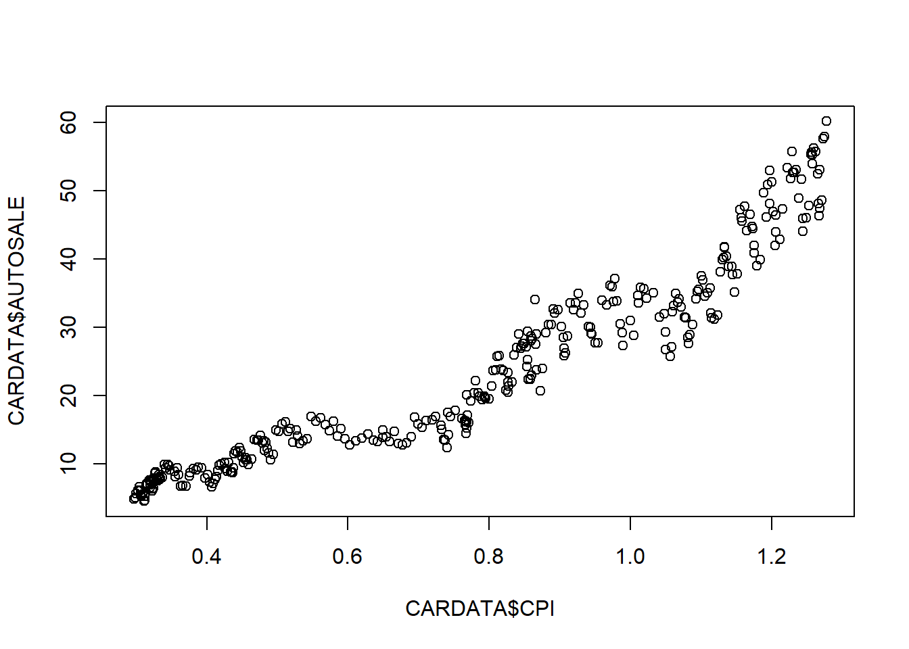
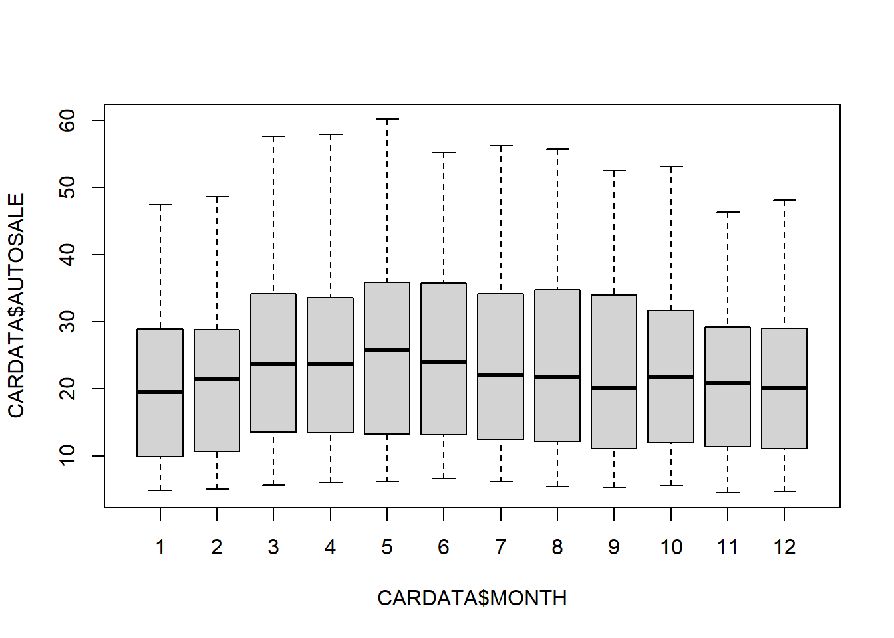
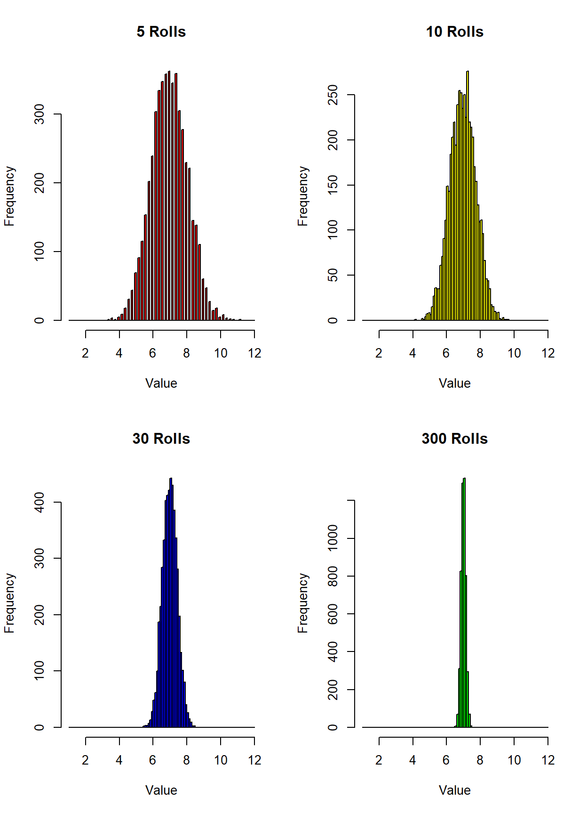
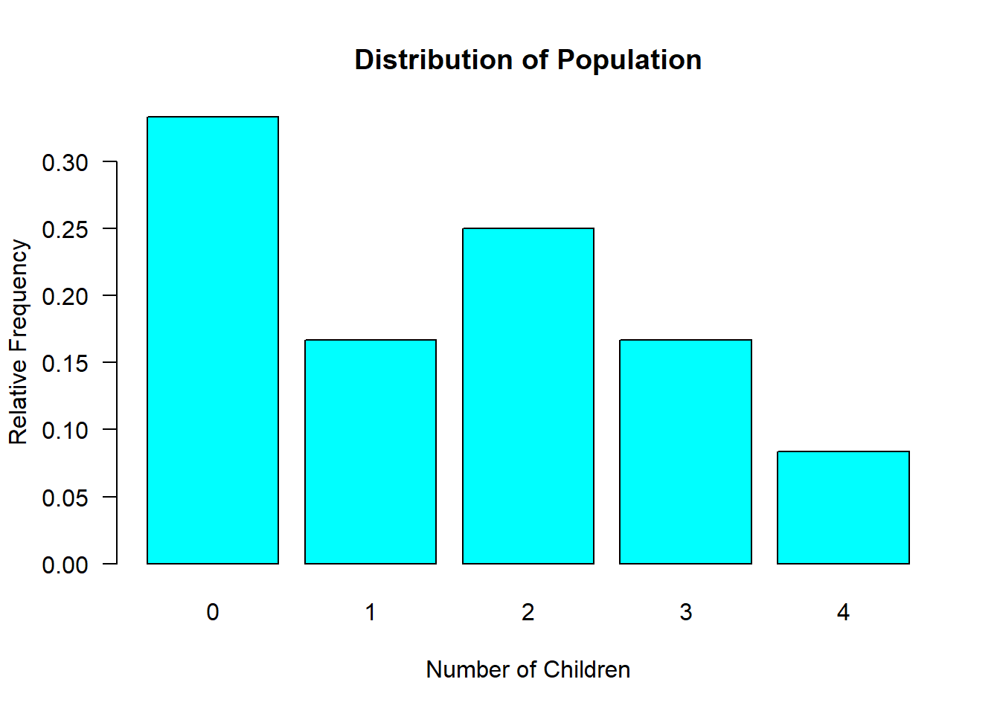

Chapter 4 The Central Limit Theorem
The Central Limit Theorem (henceforth, CLT) is one of the most important conceptual parts of inferential statistics. It is the essential reason why we can make educated guesses regarding the parameters of a population using information on the statistics of a sample. The CLT will going on in the background of every subsequent chapter of this course companion. Doing statistics without fully understanding the CLT is simple going through the motions. You will not be able to fully appreciate inferential statistics without knowing what is really going on beneath the hood.
4.1 The CLT (Formally)
Recall the concept of sampling distribution from chapter 2. For every randomly selected sample (i.e., a subset of the population), you can calculate a sample mean. If you were to repeatedly collect random samples and record their sample means, then you would be able to construct a sampling distribution of the sample mean values. Looking at the frequency of values (i.e., a frequency distribution) would give you an idea of where you think the next mean value from the next sample you would randomly draw. The statistical properties of this sampling distribution is where the educated guessing is coming from.
So here is the CLT formally…
The central limit theorem states that if you have a population with mean \(\mu\) and standard deviation \(\sigma\) and take sufficiently large random samples of size \(n\) from the population with replacement, then the distribution of the sample means will be approximately normally distributed.
There are some finer details to note.
Given the population parameters \(\mu\) and \(\sigma\), the resulting sampling distribution will be a normal distribution with mean \(\mu\) and standard deviation \(\sigma / \sqrt{n}\).
This will hold true regardless of whether or not the source population is normal, provided the sample size is sufficiently large (usually \(n > 30\)).
If the population distribution is normal, then the theorem holds true even for samples smaller than 30.
This means that we can use the normal probability model to quantify uncertainty when making inferences about a population mean based on the sample mean.
Now, the CLT can be proven - but I think it might be better to illustrate the CLT with a couple of examples.
4.2 Application 1: A Sampling Distribution with a Known Population
The first application presents sampling distributions for a random process where we know the underlying process of the population: The rolling of two die.
Suppose you worked for a gaming commission and placed in charge of making sure the dice at a casino were fair. We know that the (population) average roll of 2 fair die is 7 while the standard deviation is 2.45.4
It wouldn’t be fair for you to test a set of dice for fairness by rolling them once because there is a large probability of rolling a number other than 7. In particular, there are 36 possible outcomes of rolling two die and only 6 of those outcomes equal 7. This means that although 7 is the highest probability single outcome, there is a much higher probability of rolling a number other than 7 (ever play craps?).

The figure above is essentially the population distribution of rolling two die. The average (mean) value is 7, the range of possible outcomes are between 2 and 12, and the standard deviation is a number that represents the dispersion of individual values around the mean. If you were to roll two die, then the outcome of that roll is conceptually a draw from this distribution.
Since we don’t want to wrongfully accuse the casino of cheating, we need to roll the dice a few times to get an idea of what the average roll value is. If it is fair dice, then we know it will roll a 7 on average - but that means we would need to roll the dice an infinite amount of times to achieve this. To be realistic, lets settle on a number of rolls to be generally given by \(n\). If we choose \(n=5\), then that means we roll the dice 5 times, record the roll each time, and then record the average. This is a sample average of a sample of size 5. We could do this for \(n=10\), \(n=30\), \(n=300\), etc.

The figure is illustrating four potential sampling distributions. For example, if you were to collect a sample of 5 rolls, then you would technically be drawing a sample average from the distribution in the upper left. On the other hand, if you decide to roll the dice 300 times, then you are technically drawing a sample average from the distribution in the lower-right.
There are two main takeaways from the above illustration.
Sampling distributions appear to approximate normal distributions. The normal distribution is the classic bell-curve distribution that tends to mysteriously show up in empirical analyses. The CLT is the reason why. Note that even though the original distribution didn’t look like a normal distribution at all, you still can construct sampling distributions that appear normal. This holds regardless of the initial population distribution (check out the video about rabbits and dragons on the course website if you don’t believe me).
Sampling distributions become more normal and have a lower standard deviation when the sample size gets bigger. Notice that as the sample size goes up, the distributions become narrower. This means that when there is a big sample size there is a very low probability that your going to see sample averages near 2 or 12. This should make sense: If you roll two dice 300 times and take the average, there is no way you are going to record a sample average of 2 unless you roll a 2 300 times in a row. As the sample size increases, the extreme events start getting diluted. This reduces the standard deviation of the sampling distribution.
The sampling distributions (for \(n \geq 30\)) are distributed normal with mean \(\mu\) and standard deviation \(\sigma / \sqrt{n}\). Technically this means that your random sample will produce a random outcome (a sample mean) which we denote \(\bar{X}\).
\[ \bar{X} \sim N \left( \mu, \frac{\sigma}{\sqrt{n}} \right) \]
You can see these two properties in the four sampling distributions illustrated above. All four sampling distributions are centered around 7, which is the population mean. As sample size gets larger, the sampling distributions get narrower around the population mean. This illustrates why a larger sample has a better shot at becoming a better representation of the population.
4.3 Application 2: A Sampling Distribution with an Unknown Population
In most applications, we will not be as lucky as in the first application and we will know nothing about the underlying population. The beauty of the CLT is that this doesn’t matter. We can still apply the CLT to set the stage for statistical inference.
In light of school closings back in 2020, the city of Philadelphia considered sending out $100 EBT cards to every student registered in public school.
A key question at the beginning of considering this policy is how much would this policy cost?
There are 352,272 families in Philadelphia, and the city has records on how many students are registered in public schools.
- Suppose it is too costly (at the initial stage) to determine the total number of children.
If we knew the average number of children registered per family, we can get an estimate of the cost of the policy.
Suppose we are omniscient…
- The POPULATION average number of children per family is… \[\mu = 1.5\] \[\sigma = 1.38\]
NOTE: We do not know these population parameters. I am simply stating them here so we can refer to them later for verification. In reality, we will never know these population parameters. That’s why we need inferential statistics.

4.3.1 The Sample
Since it is too costly to examine the entire population (at the initial stage), we draw a single sample.
We use the sample to calculate sample statistics
Since the sample is randomly drawn from the population, the sample statistics are randomly drawn from a sampling distribution.
The characteristics of the sampling distribution depends on the sample size \(n\).


The figures above show sampling distributions of various sample sizes. Note that all of these distributions are centered around the same number (of 1.5), and the dispersion around the mean is getting small as \(n\) is getting larger. In other words, the standard deviation \(\sigma / \sqrt{n}\) is getting smaller and \(n\) is getting larger.
4.4 The Punchline
Once you determine a sample size \((n)\), you get one random draw from the appropriate sampling distribution.
The distribution is approximately normal
The mean is \(\mu\)
The standard deviation \(\sigma/\sqrt{n}\)
What does this buy us? The answer is everything if we want to apply any form of confidence (i.e., stating a probability of occurring).
The reason is that the normal distribution has a lot of useful properties.
The distribution is symmetric. The shape of the distribution to the right of the mean is identical to the shape of the distribution to the left of the mean.
Approximately 95% of all possible outcomes are within 2 standard deviations of the mean.
Two illustrate these two properties, consider the generic normal distribution illustrated below. You can easily see the symmetry of the distribution, while the shaded area represents 95% of the distribution. In probability terms, 95% of the area of the probability distribution means that there is a 95% chance of drawing a value within this range.

So what does this really buy us? Consider the application above about the Philadelphia policy where we would have in reality have no idea what the population parameters \((\mu,\;\sigma)\) are, or what the population distribution even looks like. However, the CLT says that if we decide on a sample size \(n\), then we will draw from a sampling distribution that is a normal distribution with mean \(mu\) and standard deviation \(\sigma / \sqrt{n}\).

So what we know is that once we draw a random sample and construct a sample mean, we can say with 95% confidence that that sample mean was drawn from the shaded region of the above distribution. We know what the sample mean value is because we just calculated it. What we don’t know is what \(/mu\) is. However, we can construct a probabilistic range (a confidence interval) around where we think this population parameter lies. This is where we are going next.
The mean of a single dice throw is 3.5, \[ 3.5 = (1 + 2 + 3 + 4 + 5 + 6) / 6\] and the expected value of two independent dice is the sum of expected values of each die. Standard deviation can be calculated using this mean value and the formula presented earlier.↩︎